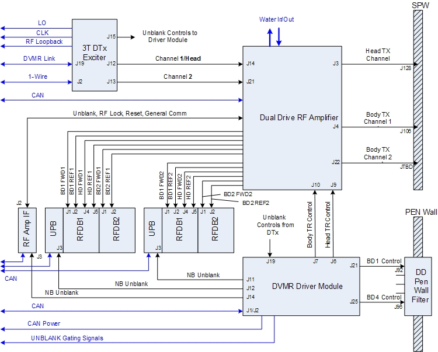
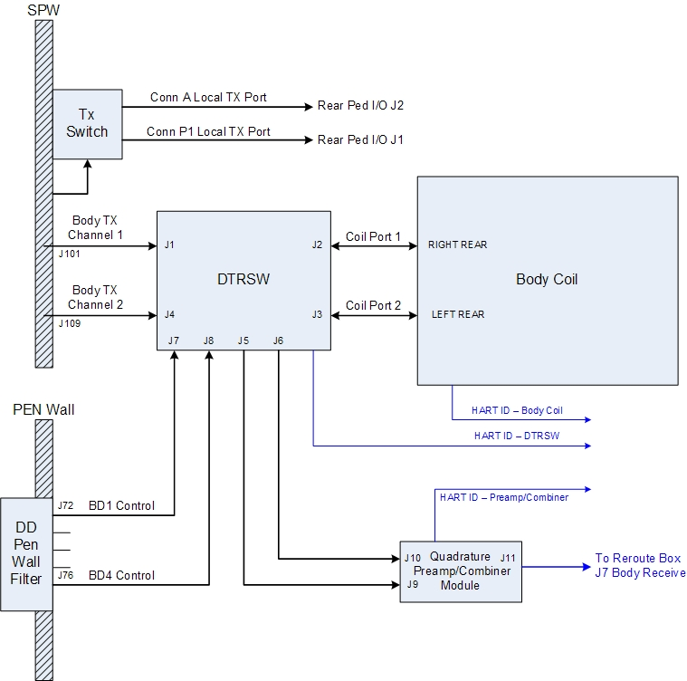
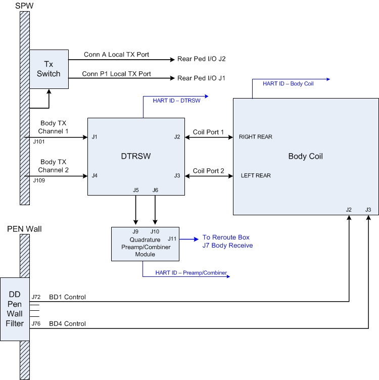
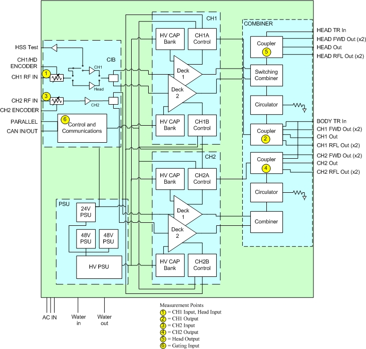
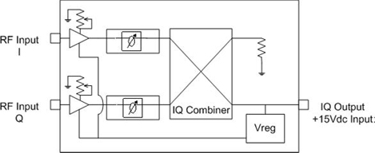

- 00000018WIA30574E20GYZ
- id_131057904.4
- Apr 24, 2023 5:22:18 PM
Dual Drive Theory
Overview
The purpose of the dual drive feature is to improve image homogeneity.
Dual drive technology reduces shading caused by dielectric affect when scanning areas of the body that are more elliptical or irregular in shape (rather than circular), such as the thigh, pelvis, abdomen, and breast. The dual drive controls the amplitude and phase relationships between the two separate drive points on the system body coil and minimizes the dielectric effect. The dual drive system establishes an elliptical polarized RF field primarily in a horizontal direction.
Dual drive applies only to body transmit. Two identical body transmit paths are maintained from the exciter output to the body coil input. Dual drive only affects body mode imaging and receive-only surface coil (single channel and phased array) imaging.
A 3.0T system with dual drive amplifier and exciter drives the body coil in either Quadrature mode or Elliptical mode.
Elliptical mode is available as a customer-purchased option. Quadrature mode is always available.
Two types of Elliptical mode are selectable in the interface:
- Preset mode: A fixed set of values for attenuation and phase; the default mode for the end user in most scans. The presets vary based on the coil being used for a scan.
- Optimized mode: The operator sets the values of attenuation and phase on a per-patient and per-anatomy basis. Using Optimized mode is complicated and time consuming. Most operators do not use this option.
Most system tools and service protocols are run only in Quadrature mode. One exception is Uniformity, which lets the user choose Quadrature or Preset mode.
Anatomies with circular shapes, such as head, knees, and wrists, are not improved through the use of dual drive technology. Therefore, dual drive is not applicable to any local TR coils (TR split head, TR knee, TR wrist, etc.).
The dual drive feature includes system tools for testing and calibration.
Block diagrams
The block diagrams show configurations for the equipment room and the scan room.
Equipment room block diagram
The illustration below shows the configuration of a dual drive equipment room, the same for either 750 or 750w.

Scan room block diagram
The illustrations below shows the configuration of a dual drive scan room. The configuration is slightly different for 750w than 750 (for 750, the DD lines do not go through the DTRSW).


Dual drive amplifier block diagram
The illustration below shows a block diagram of the dual drive RF amplifier.

Hardware components
Most of the hardware components in the transmit chain are different between a dual drive system and a single drive system. However, in the receive chain, only the body receive quadrature preamp/combiner module is different.
3.0T systems with dual drive have no remotely located dummy load (in the hybrid or magnet room) to absorb reflected power. Instead, all reflected power from the RF body coil is absorbed by use of internal circulators and dummy loads inside the RF amplifier. Therefore, during normal operation, it is not unusual for large values of reflected power in excess of 4:1 VSWR to be present on the channel 1 and channel 2 body RF transmission lines. The 3.0T DTX1 exciter drives the channel 1 and channel 2 RF amplifier gain stages with two RF outputs, each of which can be independently set with respect to amplitude and phase. However, both outputs use the same exciter unblank control signal.
In dual drive, the naming convention of CH1 for channel 1 and CH2 for channel 2 is used. CH2 exits the exciter at J13 and leads with respect to CH1 (at J12). CH2 is the adjustable channel for elliptical mode. The dual drive RF amplifier has two independent RF inputs and uses one unblank signal to control dual body output ports. Each body output port is capable of 15 kW PEP at 1 kW average.
During body transmit, the RF amplifier receives two inputs from the exciter (J14 and J21), and there are two outputs on J4 and J22. During head transmit, the RF amplifier receives one input from the exciter (J14), and there is one output on J3.
The driver module provides a single body TR bias signal to the dual drive RF amplifier, as in single drive systems. The amplifier couples this single bias signal onto the two body transmit output ports. Therefore, both body channel transmit cables carry both RF and common body TR DC signal (as in previous systems). What is different is that an open or short-circuit failure on either CH1 or CH2 transmission line can cause a body TR bias fault. Locating the source of a fault involves using the TR DD System Path Check diagnostic and comparing the reported body TR bias current values while disconnecting the CH1 and CH2 transmission lines one at a time.
Dual drive RF amplifier
The dual drive RF amplifier transmits on two separate body channels (J4 and J22) or a head channel (J3). Each channel must be calibrated separately. Both body channels are calibrated for 15 kW at 127.72 MHz.
One is used for body channel 1 and head; the other is used for body channel 2. The amplifier has two digital rotary encoder adjustment controls, located on the front of the RF amplifier. One is used to adjust power output for body channel 1 and head; the other is used to adjust power output for body channel 2. Because these are digital devices, adjust them only while the RF amplifier is actively pulsing.
Driver module
The same driver module is used for both MR750 and MR750w systems. Some driver module outputs are not used in MR750w product.
Because both CH1 and CH2 are identical transmission line circuits and the body TR bias is being supplied in parallel fashion between both circuits, one should expect to see the same amount of bias drawn on each circuit when the other circuit is physically disconnected. When an open circuit fault is reported, then the fault is located on the channel circuit reporting the least amount of current during TR DD System Path Check diagnostic when the other channel is disconnected. Likewise, when a short circuit is reported, then the fault is located on the channel circuit reporting the most amount of current during the TR DD System Path Check diagnostic when the other channel is disconnected.
Dynamic disable biasing for MR750w systems
MR750w systems use a dynamic disable biasing scheme.
- Driver module BD1 and BD4 dynamic disable bias are routed to the DTRSW. The DTRSW routes BD1 bias through the channel 1 drive cable to the body coil, and BD4 bias through the channel 2 drive cable to the body coil.
- Reverse bias voltage (150V), which detunes the body coil, is output during head mode and surface coil receive mode.
- Forward bias voltage (-13V), which syncs current through the body coil tuning circuits and tunes the body coil, is applied during body mode.
- MR750w systems do not utilize direct drive bias.
Dynamic disable and direct drive biasing for MR750 systems
MR750 systems use a dynamic disable biasing scheme that is the opposite of that used with MR750w systems.
- Driver module BD1, BD2, BD3, and BD4 dynamic disable bias are routed directly to the body coil.
- Reverse bias voltage (550 VDC), which syncs current through the body coil tuning circuits and tunes the body coil, is applied during body mode.
- Forward bias voltage (-15 VDC), which detunes the body coil and enables head mode.
Direct drive bias is routed to the MR750 DTRSW module and is used to isolate and decouple body coil ports during head mode.
- Reverse bias voltage (550 VDC), which enables the transmit and receive connection path to the body coil, is applied during body mode.
- Forward bias voltage (-15 VDC) isolates and decouples body coil ports during head or surface mode.
Dual Transmit Switch (DTRSW)
The dual transmit switch (DTRSW) contains the body TR circuitry needed to properly route the transmit and receive signals and to protect the body preamps and combiner assembly from signal overload. It does not contain quadrature phase shifting circuitry because this function is performed by the 3.0T DTX1 exciter.
DTRSW used by MR750w
The DTRSW used with MR750w products is able to effectively isolate body coil ports without the need for direct drive bias during head or surface mode, and so direct drive bias is not used. The routing of dynamic disable bias is different from that in single drive systems. The dynamic disable bias is routed directly onto the body RF coil channel 1 and channel 2 RF drive transmission lines through the DTRSW.
DTRSW used by MR750
The DTRSW used with MR750 products uses direct drive bias to isolate body coil ports during head and surface modes. Dynamic disable bias is not routed to the MR750 DTRSW and is instead routed directly to existing four dynamic disable lines at the body coil.
DTRSW operation for both MR750 and MR750w
For the dual drive feature, the DTRSW replaces the body hybrid. The DTRSW is mounted on the right side of the magnet near the back (opposite from where the body hybrid is on single drive systems). The preamp combiner assembly is mounted on it.
The head transmit circuit routing is identical to that used in 3.0T systems with the 35 kW RF amplifier, and the same components are used. The head transmit circuit is a single drive and does not use dual drive or a DTRSW.
Narrow band exciter
The 3.0T DTX exciter is the same basic exciter used on 3.0T systems with the 35 kW RF amplifier, but with two independent RF output channels. It also has a different part number.
Both channels are calibrated with each TPS reset. Each channel’s output is calibrated for amplitude and phase using the system receive loopback functionality. Three log files are generated: dtx1_cal_I_date-stamp, dtx1_cal_Q_date-stamp, and dtx1_iqPhase_date-stamp, all in /usr/g/service/log.
Quadrature preamp/combiner module
The 3.0T quadrature preamp combiner is the first gain/processing block in the body coil receive chain (RxC). The preamp combiner accepts two inputs: the I and Q channels from the body coil. The preamp combiner has a single output that connects to the RF hub. The function of the preamp combiner is similar to the preamp combiner used in single drive systems.
The high level function of the preamp combiner can be divided into two sections: the preamplifier and the IQ combiner. The preamplifier provides a nominal gain of 28 dB with a low level of injected noise. The IQ combiner combines the two amplified body coil channels (I and Q) in quadrature to produce one composite output.

Software
Dual drive configuration files
MRConfig.cfg in /w/config has the amplifier type for dual drive as well as three additional parameters to enable dual drive: RFampType, dualDriveCapable, and ellipticDriveEnable.
Scan Rx
A parameter called RF Drive Mode is available on the scan prescription page. Quadrature or Preset can be selected on almost any scan sequence without any preliminary work. Preset is usually the default value.
Tools affected by dual drive
The following service tools are affected by dual drive:
- RF/UPM Calibration
- RF Amp Power Check Tool
- RFA
- Uniformity Tool
- Dual Drive Quadrature Calibration
Dual Drive RF Amplifier Troubleshooting contains procedures to troubleshoot the dual drive RF amplifier.
RF amplifier and UPM calibration
The UPM Tool user interface includes the setup for RF amplifier calibration.
Apbcal PSD ignores any values in the QuadratureTransmit.dat file, so no attenuation or phase is added during calibration.
With dual drive, the system has two body channels and one head channel. The additional body channel, along with the other two channels, needs calibrating and requires a functional check.
RF Amp power check tool
The RF Amp Power Check Tool is used to understand the health of the RF amplifier and the rest of the transmit chain. It includes data for the additional body channel. Test the RF amplifier independently from the transmit chain hardware by connecting the body transmit channel (the one that you are testing) directly to an air-cooled RF dummy load. For more information, see RF Amp Power Check Tool.
RFA
RFA includes the additional channel at exciter and amplifier output. However, it captures data on one channel at a time. It does allow the “unused” channel to be enabled or disabled. For more information, see RFA Loopback Test
Uniformity Tool
The user interface for the Uniformity Tool allows testing in Quad or Preset mode with PASS/FAIL results based on different limits. Quad > 15 and Preset > 30.
Dual drive quadrature calibration tool
The DD Quadrature Calibration Tool is designed to determine the attenuation and phase values needed to create a quadrature field inside the bore. It compensates for non-idealities in the exciter, cabling, amplifier, DTRSW, and body coil. For Quad operation, the goal is to have two equal amplitude body transmit paths that are nominally 90 degrees apart.